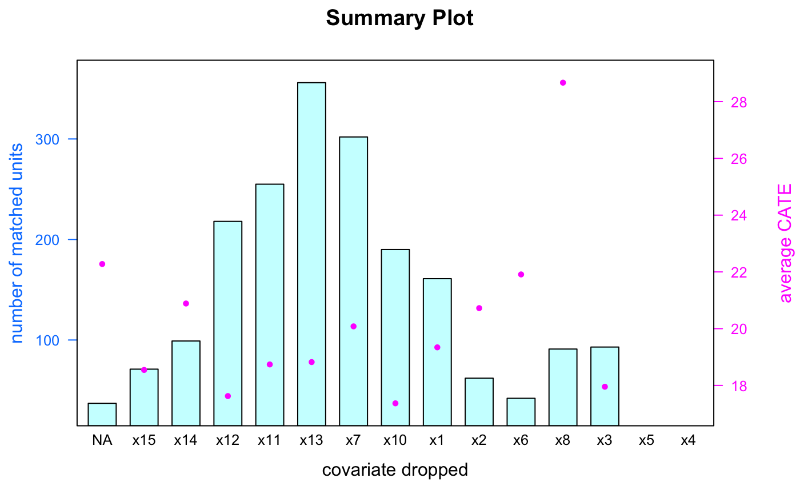

Modeling Synthetic Data
Jerry Chia-Rui Chang
2018-06-30
Source:vignettes/Synthetic_Data.Rmd
Synthetic_Data.RmdLoad required packages
library(FLAME)
library(RSQLite)
library(RPostgreSQL)
#> Loading required package: DBI
library(reticulate)
library(latticeExtra)
#> Loading required package: lattice
#> Loading required package: RColorBrewerGenerate synthetic data
Data_Generation function creates simulated data with specific characteristics and known treatment effects. The following function is used to generate synthetic data.
\[ \begin{aligned} & y = \sum_{i}\alpha_{i}x_{i} + T\sum_{i}\beta_{i}x_{i} + T \cdot U \sum_{i=1..5, \gamma = 1...5, \gamma > i} x_{i}x_{\gamma} \end{aligned} \] \(T \in \{0,1\}\) indicates whether an unit is treated or in control. \(\alpha_{i} \sim N(10s, 1)\) with \(s \sim Uniform\{-1,1\}\), \(\beta_{i} \sim N(1.5,0.15)\), and \(U\) represents the coefficient of non-linear term.
Apply Data_Generation function to generate 1000 treated units and 1000 control units, where U = 5 with 10 important covariates and 5 unimportant covariates. Assume holdout training data is the same as input data.
data <- FLAME::Data_Generation(num_control = 1000, num_treated = 1000,
num_cov_dense = 10, num_cov_unimportant = 5, U = 5)
holdout <- data head(data)
#> x1 x2 x3 x4 x5 x6 x7 x8 x9 x10 x11 x12 x13 x14 x15 outcome treated
#> 1 0 1 0 0 0 0 0 0 0 1 0 1 0 1 1 -2.996484 0
#> 2 0 1 0 1 0 0 1 1 1 0 1 1 1 0 1 6.699281 0
#> 3 1 1 1 1 1 0 1 0 0 0 1 0 0 0 0 15.173103 0
#> 4 1 0 1 1 1 0 0 0 1 1 0 0 1 1 1 -16.340285 0
#> 5 1 1 1 1 1 0 0 1 0 0 1 0 0 1 0 -2.886323 0
#> 6 0 1 1 1 1 1 0 0 1 0 0 1 0 0 1 -6.562262 0Bit vectors implementation
One of the input requirement for FLAME_bit implementation is a list specifying the number of level each covariate has. For example, the data generation function generates 15 covariates, where each covariate has 2 level (binary variable). Therefore, the input requirement for covs_max_list list should be as below.
covs_max_list = rep(2,15)
covs_max_list
#> [1] 2 2 2 2 2 2 2 2 2 2 2 2 2 2 2Run FLAME_bit function with the following command. The output contains two elements (1) list of covariates used for matching at each iteration (2) list of dataframe showing all matched units, size of each matched group, and its conditional average treatment effect (CATE).
result_bit <- FLAME::FLAME_bit(data = data, holdout = holdout, num_covs = 15,
num_treated = 1000, num_control = 1000,
covs_max_list = covs_max_list, tradeoff = 0.1)Database systems implementation
For database systems implementation, FLAME package provides two versions - SQLite and PostgreSQL. PostgreSQL version requires installmenet of external database system and has faster implementation. SQLite version does not require external database system but its implementation is slower than the PostgreSQL version.
PostgreSQL
If your computer does not have PostgreSQL installed, install from here. For connecting and setup of PostgreSQL server, please refer to tutorial.
Connect to PostgreSQL in R and run FLAME_PostgreSQL function with the following command. Note that it is required to name the connection as db, and disconnect it once done. The output contains two elements (1) list of covariates used for matching at each iteration (2) list of dataframe showing all matched units, size of each matched group, and its conditional average treatment effect (CATE).
#Connect to PostgreSQL
drv <- dbDriver('PostgreSQL')
#Name the connection as db
db <- dbConnect(drv, user="postgres", dbname="FLAME", host='localhost',
port=5432, password = 'new_password')
#Run FLAME_PostgreSQL
result_PostgreSQL <- FLAME::FLAME_PostgreSQL(db = db, data = data, holdout = holdout,
num_covs = 15, tradeoff = 0.1)
#Disconnect from db
dbDisconnect(db)
#> [1] TRUESQLite
Connect to a temporary database in R and run FLAME_SQLite function with the following command. Note that it is required to name the connection as db. The output contains two elements (1) list of covariates used for matching at each iteration (2) list of dataframe showing all matched units, size of each matched group, and its conditional average treatment effect (CATE).
#Name the connection as conn
db <- dbConnect(SQLite(),"tempdb")
#Run FLAME_SQLite
result_SQLite <- FLAME::FLAME_SQLite(db = db, data = data, holdout = holdout,
num_covs = 15, tradeoff = 0.1)
#Disconnect from db
dbDisconnect(db)Results
We compare the results of bit vectors, PostgreSQL, and SQLite implementations, where all three yield the same outcomes.
get conditional average treatment effect (CATE)
- When 8 covariates are used for matching, apply
CATEfunction to see details of all matched units, including the size and CATE of each matched group. Note that if no units are matched,CATEwill return nothing.
head(FLAME::CATE(FLAME_object = result_bit, num_covs = 8)) #bit vectors
#> x1 x2 x4 x5 x7 x8 x9 x10 effect size
#> 1 0 0 0 0 0 0 1 0 8.948777 4
#> 2 0 0 0 0 1 0 1 0 -2.298133 4
#> 3 0 0 0 0 1 0 1 1 12.057443 4
#> 4 0 0 0 0 1 1 1 0 13.027446 3
#> 5 0 0 0 1 0 0 0 1 2.310525 6
#> 6 0 0 0 1 1 0 1 0 4.392689 4
head(FLAME::CATE(FLAME_object = result_PostgreSQL, num_covs = 8)) #PostgreSQL
#> x1 x2 x4 x5 x7 x8 x9 x10 effect size
#> 1 0 0 0 0 0 0 1 0 8.948777 4
#> 2 0 0 0 0 1 0 1 0 -2.298133 4
#> 3 0 0 0 0 1 0 1 1 12.057443 4
#> 4 0 0 0 0 1 1 1 0 13.027446 3
#> 5 0 0 0 1 0 0 0 1 2.310525 6
#> 6 0 0 0 1 1 0 1 0 4.392689 4
head(FLAME::CATE(FLAME_object = result_SQLite, num_covs = 8)) #SQLite
#> x1 x2 x4 x5 x7 x8 x9 x10 effect size
#> 1 0 0 0 0 0 0 1 0 8.948777 4
#> 2 0 0 0 0 1 0 1 0 -2.298133 4
#> 3 0 0 0 0 1 0 1 1 12.057443 4
#> 4 0 0 0 0 1 1 1 0 13.027446 3
#> 5 0 0 0 1 0 0 0 1 2.310525 6
#> 6 0 0 0 1 1 0 1 0 4.392689 4- To see the CATE for (x1 = 1, x2 = 1, x3 = 0,…) when exactly \(n\) covariates are used for matching, apply
CATEfunction as below. Note that (x1 = 1, x2 = 1, x3 = 0, …) is represented by input cov_name = c(“x1”, x2“,”x3“, …) and cov_val = c(1, 1, 0, …).
n <- 8
cov_name <- result_bit[[1]][[8]]
FLAME::CATE(FLAME_object = result_bit, num_covs = n, cov_name = cov_name,
cov_val = c(1,0,1,0,1,0,0,0))
#> [1] "no CATE for such combination is available using this procedure"
FLAME::CATE(FLAME_object = result_bit, num_covs = n, cov_name = cov_name,
cov_val = c(1,1,1,0,1,0,0,1))
#> [1] "no CATE for such combination is available using this procedure"
FLAME::CATE(FLAME_object = result_bit, num_covs = n, cov_name = cov_name,
cov_val = c(0,0,1,0,1,1,0,0))
#> x1 x2 x4 x5 x7 x8 x9 x10 effect size
#> 13 0 0 1 0 1 1 0 0 12.36142 6
FLAME::CATE(FLAME_object = result_bit, num_covs = n, cov_name = cov_name,
cov_val = c(0,1,1,0,1,0,0,0))
#> [1] "no CATE for such combination is available using this procedure"
FLAME::CATE(FLAME_object = result_bit, num_covs = n, cov_name = cov_name,
cov_val = c(1,1,1,1,1,0,0,1))
#> x1 x2 x4 x5 x7 x8 x9 x10 effect size
#> 52 1 1 1 1 1 0 0 1 46.5548 4- To see the all matched groups where the unit contains the covariate combination (x2 = 1, x3 = 0, x5 = 1), apply
CATEfunction as below. Note that (x2 = 1, x3 = 0, x5 = 1) is represented by input cov_name = c(“x2”, “x3”, “x5”) and cov_val = c(1, 0, 1).
CATE_object <- CATE(FLAME_object = result_bit, cov_name = c("x2", "x3", "x5"), cov_val = c(1, 0, 1))
CATE_object
#> [[1]]
#> x1 x2 x3 x4 x5 x6 x7 x8 x9 x10 x11 x12 x13 x14 x15 effect size
#> 10 0 1 0 0 1 0 0 1 0 1 0 0 1 1 1 10.96145 2
#> 11 0 1 0 0 1 1 1 0 1 0 0 1 1 1 1 13.05425 2
#> 12 0 1 0 0 1 1 1 1 1 0 0 0 1 1 0 14.55807 2
#> 13 0 1 0 1 1 1 0 1 0 1 0 0 1 1 0 24.33396 2
#> 22 1 1 0 1 1 1 1 1 1 1 0 0 0 1 0 43.91656 2
#>
#> [[2]]
#> x1 x2 x3 x4 x5 x6 x7 x8 x9 x10 x11 x12 x14 x15 effect size
#> 8 0 1 0 0 1 1 1 1 0 0 1 1 0 0 12.88176 2
#> 9 0 1 0 0 1 1 1 1 0 1 1 1 0 1 14.14262 2
#> 10 0 1 0 1 1 1 0 1 0 1 1 0 0 0 24.33396 2
#> 21 1 1 0 0 1 0 1 1 0 1 0 1 1 0 23.86773 2
#> 22 1 1 0 1 1 1 0 0 1 0 1 0 0 0 39.54553 2
#>
#> [[3]]
#> x1 x2 x3 x4 x5 x6 x7 x8 x9 x10 x11 x12 x14 effect size
#> 12 0 1 0 0 1 1 1 1 1 0 1 1 1 14.55807 2
#> 39 1 1 0 1 1 1 0 1 1 0 1 0 1 41.04935 2
#> 40 1 1 0 1 1 1 1 0 1 0 0 0 0 41.15188 2
#>
#> [[4]]
#> x1 x2 x3 x4 x5 x6 x7 x8 x9 x10 x11 x12 effect size
#> 25 0 1 0 0 1 1 0 1 0 1 1 1 12.53627 3
#> 26 0 1 0 0 1 1 1 1 0 1 1 0 14.14262 2
#> 31 0 1 0 1 1 1 0 0 0 1 0 1 22.83015 2
#> 32 0 1 0 1 1 1 0 1 1 0 0 1 24.74942 2
#> 33 0 1 0 1 1 1 1 1 0 0 1 1 24.67945 2
#> 75 1 1 0 0 1 1 0 1 0 1 1 0 23.83620 2
#> 79 1 1 0 1 1 0 0 1 1 1 1 1 40.73539 2
#> 80 1 1 0 1 1 0 1 0 0 0 0 1 37.90075 2
#>
#> [[5]]
#> x1 x2 x3 x4 x5 x6 x7 x8 x9 x10 x11 effect size
#> 28 0 1 0 0 1 0 0 0 0 1 0 9.45763 2
#> 29 0 1 0 0 1 0 1 1 1 1 1 14.24411 3
#> 30 0 1 0 0 1 1 0 1 0 0 1 11.27541 3
#> 34 0 1 0 1 1 0 0 0 0 0 1 19.99446 2
#> 35 0 1 0 1 1 0 0 0 1 1 1 22.93164 2
#> 36 0 1 0 1 1 0 1 0 1 1 0 24.53799 2
#> 37 0 1 0 1 1 0 1 1 0 0 1 23.10463 2
#> 38 0 1 0 1 1 0 1 1 0 1 0 24.36549 2
#> 39 0 1 0 1 1 0 1 1 1 0 0 24.78094 2
#> 40 0 1 0 1 1 1 0 0 1 0 1 23.24560 3
#> 41 0 1 0 1 1 1 1 0 1 1 0 26.11281 2
#> 42 0 1 0 1 1 1 1 1 1 0 0 26.35576 2
#> 84 1 1 0 0 1 0 1 1 1 0 0 24.28318 2
#> 85 1 1 0 0 1 1 0 0 1 0 0 22.74784 2
#> 86 1 1 0 0 1 1 1 0 0 0 0 22.67787 3
#> 90 1 1 0 1 1 0 1 1 1 0 0 41.08087 2
#> 91 1 1 0 1 1 1 0 0 1 1 1 40.80639 3
#> 92 1 1 0 1 1 1 1 0 1 0 1 41.15188 4
#>
#> [[6]]
#> x1 x2 x3 x4 x5 x6 x7 x8 x9 x10 effect size
#> 39 0 1 0 0 1 0 0 0 0 0 8.196769 2
#> 40 0 1 0 0 1 1 1 0 1 0 13.054253 4
#> 46 0 1 0 1 1 0 1 0 1 0 23.277125 2
#> 109 1 1 0 0 1 0 1 0 0 0 21.103050 3
#> 110 1 1 0 0 1 0 1 0 1 1 24.040223 3
#> 111 1 1 0 0 1 1 0 1 0 0 22.575341 2
#> 119 1 1 0 1 1 0 0 1 0 0 37.798214 2
#> 120 1 1 0 1 1 0 1 0 1 1 40.837918 2
#> 121 1 1 0 1 1 0 1 1 1 1 42.341735 4
#> 122 1 1 0 1 1 1 0 1 0 0 39.373036 2
#> 123 1 1 0 1 1 1 0 1 0 1 40.633897 2
#> 124 1 1 0 1 1 1 0 1 1 1 42.310209 4
#> 125 1 1 0 1 1 1 1 1 1 1 43.916558 2
#>
#> [[7]]
#> x1 x2 x3 x4 x5 x7 x8 x9 x10 effect size
#> 36 0 1 0 0 1 0 0 1 0 10.23527 4
#> 37 0 1 0 0 1 0 0 1 1 12.34658 2
#> 38 0 1 0 0 1 0 1 1 1 13.85040 2
#> 39 0 1 0 0 1 1 0 0 0 10.16530 2
#> 40 0 1 0 0 1 1 0 0 1 12.27662 3
#> 41 0 1 0 0 1 1 1 0 0 11.66912 3
#> 44 0 1 0 1 1 0 1 0 0 21.86047 2
#> 45 0 1 0 1 1 0 1 1 1 25.64809 4
#> 46 0 1 0 1 1 1 1 0 1 25.57813 3
#> 89 1 1 0 0 1 0 0 0 0 19.85889 4
#> 90 1 1 0 0 1 0 0 1 1 22.79606 2
#> 91 1 1 0 0 1 1 0 1 0 23.14155 3
#> 92 1 1 0 0 1 1 1 1 0 25.49582 3
#> 99 1 1 0 1 1 0 0 0 0 37.50704 4
#> 100 1 1 0 1 1 1 0 0 0 38.26293 4- Apply
CATE_plotto visualize CATE of all matched groups in boxplot.
CATE_plot(CATE_object)
- Apply
CATE_AVGto compute average CATE. Note that average CATE is the weighted average of all matched groups.
CATE_AVG(CATE_object)
#> [1] 25.18165Get detailed information of all matched units given specific covariate combination
The following is a specific covariate combination when eight covariates are used for matching.
#> x1 x2 x4 x5 x7 x8 x9 x10 effect size
#> 1 0 0 0 0 0 0 1 0 8.948777 4If we would like to see all units given this specific covariate combination, apply the following comand.
FLAME::MATCH(FLAME_object = result_bit, cov_name = cov_name, cov_val = cov_val)
#> x1 x2 x3 x4 x5 x6 x7 x8 x9 x10 x11 x12 x13 x14 x15 outcome treated
#> 1 0 0 1 0 0 0 0 0 1 0 1 0 0 0 0 -15.347843 0
#> 2 0 0 0 0 0 0 0 0 1 0 1 1 1 0 1 -6.399065 1
#> 3 0 0 0 0 0 0 0 0 1 0 0 1 0 0 1 -6.399065 1
#> 4 0 0 0 0 0 0 0 0 1 0 1 1 1 0 1 -6.399065 1
FLAME::MATCH(FLAME_object = result_PostgreSQL, cov_name = cov_name, cov_val = cov_val)
#> x1 x2 x3 x4 x5 x6 x7 x8 x9 x10 x11 x12 x13 x14 x15 outcome treated
#> 1 0 0 1 0 0 0 0 0 1 0 1 0 0 0 0 -15.347843 0
#> 2 0 0 0 0 0 0 0 0 1 0 1 1 1 0 1 -6.399065 1
#> 3 0 0 0 0 0 0 0 0 1 0 0 1 0 0 1 -6.399065 1
#> 4 0 0 0 0 0 0 0 0 1 0 1 1 1 0 1 -6.399065 1
FLAME::MATCH(FLAME_object = result_SQLite, cov_name = cov_name, cov_val = cov_val)
#> x1 x2 x3 x4 x5 x6 x7 x8 x9 x10 x11 x12 x13 x14 x15 outcome treated
#> 1 0 0 1 0 0 0 0 0 1 0 1 0 0 0 0 -15.347843 0
#> 2 0 0 0 0 0 0 0 0 1 0 1 1 1 0 1 -6.399065 1
#> 3 0 0 0 0 0 0 0 0 1 0 0 1 0 0 1 -6.399065 1
#> 4 0 0 0 0 0 0 0 0 1 0 1 1 1 0 1 -6.399065 1Summary Visualization
Apply summary_plot function to visualize matching process, including covariate dropped, total number of matched units, and average CATE at each iteration. Note that nothing is dropped in the beginning since all covariates are used for matching. It is represented by NA in the covariate dropped axis.
FLAME::summary_plot(result_bit)